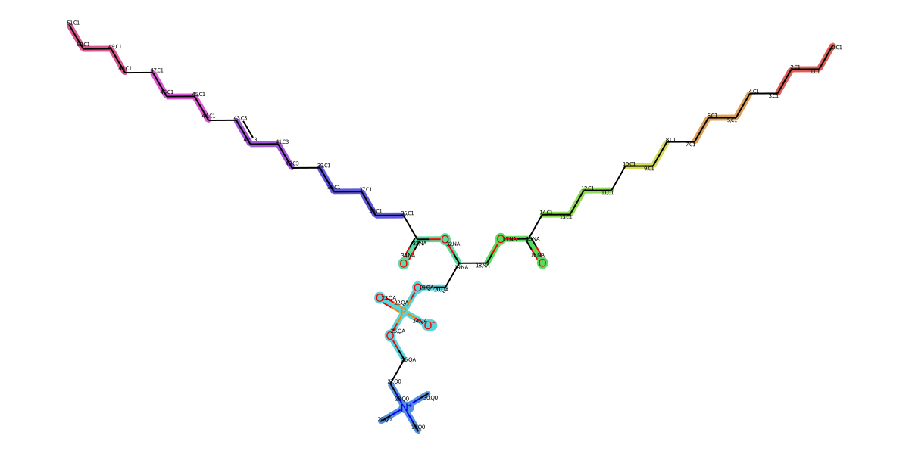

2. Mapping
DSGPM-TP for MARTINI2 CG Mapping
Map the molecules to their coarse-grained representations according to the chosen force field rules. AMOFMS can utilize DSGPM-TP to map molecules to MARTINI2 representation (for more information about DSGPM-TP model, please see the original literature). There are two ways to use it:
Shell Command:
TP_MARTINI2 --smiles 'CCCCCCCCCCCCCCCC(=O)OCC(COP(=O)([O-])OCC[N+](C)(C)C)OC(=O)CCCCCCCC=CCCCCCCCC' --num_bead 12 --json_output ./
this process will generate mapping result picture (.png) and mapping result JSON file (.json).
{kind=link}
Python Script (Full script is in run_mapping.py.):
from AMOFMS.FGMappingToCG import MappingToCGfromDSGPM_TP, MappingItem from AMOFMS.CGForceFieldParameters import InitCGForceFieldParameters, generate_system_top from opt_settings import opt_settings import os molecules = [ # molecule 1 { 'molecule name': 'POPC', 'molecular form': 'sml', # sml or pdb; if use .pdb, please add 'pdb file root'='path/to/your/pdb/file' 'smiles': 'CCCCCCCCCCCCCCCC(=O)OCC(COP(=O)([O-])OCC[N+](C)(C)C)OC(=O)CCCCCCCC=CCCCCCCCC', 'number of mapping beads': 12, 'mapping output folder': './mapping_test/POPC/mapping/POPC', 'number of atom in molecule': 134, # including H atom 'number of molecule in system': 384, 'residue name': 'POPC', # split 134 atom to 12 list corresponding to 12 cg bead(group) 'aa_group_list': [[131, 132, 133, 128, 129, 130, 125, 126, 127, 121, 122, 123, 124], ..., [78, 79, 80, 81, 82, 83, 84, 85, 86, 87, 88, 89, 90] ] }, # moleucele2 {'molecule name': 'water', ...}, ... ] all_cg_molecule_top = [] for molecule in molecules: mol_mapping = MappingToCGfromDSGPM_TP(mol_name=molecule['molecule name'], mol_form=molecule['molecular form'], smiles=molecule['smiles'], CG_num_bead=molecule['number of mapping beads'], output_dir=molecule['mapping output folder'], CGmodel=opt_settings['coarse-grained model'] ) FF_parameter_item = InitCGForceFieldParameters(mapping_item=mol_mapping.get_mapping_item(), num_mols=molecule['number of molecule in system'], setbond=opt_settings['opt bond'], setangle=opt_settings['opt angle'], setdihedral=opt_settings['opt dihedral'], ) if opt_settings['eq bond from fg']: FF_parameter_item.set_bond_parameters(top=opt_settings['fine-grained topology file'], traj=opt_settings['fine-grained trajectory file'], num_atom_with_H=molecule['number of atom in molecule'], num_mol=molecule['number of molecule in system'], res_name=molecule['residue name'], group_list=molecule['aa_group_list']) if opt_settings['eq angle from fg']: ..., if opt_settings['eq dihedral from fg']: ..., cg_molecule_top = FF_parameter_item.generate_cg_ff_parameters_item() all_cg_molecule_top.append(cg_molecule_top) system_topology = generate_system_top(mols=all_cg_molecule_top, num_mols=None)
The opt_settings.py is in here. Use the generate_system_top function to convert all molecules to the system_topology dictionary format. The system_topology can be found in opt_init_para.py.
Note
To initially obtain equilibrium bond lengths from all-atom (AA) molecular dynamics simulations, the corresponding AA trajectory and topology files should be provided.
System Topology (dict)
Then, the system_topology (dict) will be obtained:
system_topology = {'molecules': [
{'mol_name': 'POPC', 'model': 'MARTINI2',
'types': ['C1', 'C1', 'C1', 'C1', 'NA', 'NA', 'QA', 'Q0', 'C1', 'C3', 'C1', 'C1'],
'id': [0, 1, 2, 3, 4, 5, 6, 7, 8, 9, 10, 11],
'charge': [0.0, 0.0, 0.0, 0.0, 0.0, 0.0, -1.0, 1.0, 0.0, 0.0, 0.0, 0.0],
'mass': [57.1146, 56.1067, 42.08, 56.1067, 58.0357, 57.0278, 123.0234, 73.1372, 70.1334, 54.091, 56.1067, 57.1146],
'num_mols': 384,
'fg_groups': [[130, 131, 132, 133, 127, 128, 129, 124, 125, 126, 121, 122, 123],
...,
[66, 67, 68, 69, 70, 71, 72, 73, 74, 75, 76, 77],
[78, 79, 80, 81, 82, 83, 84, 85, 86, 87, 88, 89, 90]],
'bond_parameters': {(0, 1): [0.4656, 1250.0],
...,
(10, 11): [0.4655, 1250.0]},
'angle_parameters': {(4, 5, 8): [105.2565, 25.0],
...,
(0, 1, 2): [147.8506, 25.0]}},
{'mol_name': 'W', 'model': 'MARTINI2', 'types': ['P4'], 'id': [0], 'charge': [0.0], 'mass': [72], 'num_mols': 3284},
{'mol_name': 'FW', 'model': 'MARTINI2', 'types': ['BP4'], 'id': [0], 'charge': [0.0], 'mass': [72], 'num_mols': 365}],
'lj_cross_terms': {('C1', 'C3'): [0.47, 3.5],
...,
('NA', 'NA'): [0.47, 4.0]},
'cgmodel': 'MARTINI2'}
The system_topology dictionary contains detailed information about the molecular system used in the simulation. It includes descriptions of molecules, their interactions, and parameters for coarse-grained (CG) models. The following sections describe the structure and components of the system_topology, includeing molecules, lj_cross_terms and cgmodel.
Molecules
Each molecule in the system is represented as a dictionary within the molecules list. The dictionary contains the following keys:
mol_name: Name of the molecule (e.g., ‘POPC’).
model: Coarse-grained model used (e.g., ‘MARTINI2’).
types: List of bead types in the molecule.
id: List of unique IDs for each bead.
charge: List of charges for each bead.
mass: List of masses for each bead.
num_mols: Number of molecules of this type in the system.
fg_groups: Nested lists where each sublist contains the IDs of beads that belong to a specific CG group.
bond_parameters: Dictionary where keys are tuples representing bonded bead pairs, and values are lists containing bond length and force constant.
angle_parameters: Dictionary where keys are tuples representing bonded bead triplets (angles), and values are lists containing angle value and force constant.
{
'mol_name': 'POPC',
'model': 'MARTINI2',
'types': ['C1', 'C1', 'C1', 'C1', 'NA', 'NA', 'QA', 'Q0', 'C1', 'C3', 'C1', 'C1'],
'id': [0, 1, 2, 3, 4, 5, 6, 7, 8, 9, 10, 11],
'charge': [0.0, 0.0, 0.0, 0.0, 0.0, 0.0, -1.0, 1.0, 0.0, 0.0, 0.0, 0.0],
'mass': [57.1146, 56.1067, 42.08, 56.1067, 58.0357, 57.0278, 123.0234, 73.1372, 70.1334, 54.091, 56.1067, 57.1146],
'num_mols': 384,
'fg_groups': [
[130, 131, 132, 133, 127, 128, 129, 124, 125, 126, 121, 122, 123],
...,
[78, 79, 80, 81, 82, 83, 84, 85, 86, 87, 88, 89, 90]
],
'bond_parameters': {
(0, 1): [0.4656, 1250.0],
...,
(10, 11): [0.4655, 1250.0]
},
'angle_parameters': {
(4, 5, 8): [105.2565, 25.0],
...,
(0, 1, 2): [147.8506, 25.0]
}
}
Lennard-Jones Terms
The lj_cross_terms dictionary contains parameters for Lennard-Jones interactions between types of beads. Each key is a tuple of bead types, and each value is a list containing the epsilon (depth of the potential well) and sigma (finite distance at which the inter-particle potential is zero) parameters.
{
# (bead1, bead2):[sigma(nm), epsilon(kJ/mol)]
('C1', 'C3'): [0.47, 3.5],
('C1', 'QA'): [0.62, 2.0],
...
('Q0', 'Q0'): [0.47, 3.5],
('NA', 'NA'): [0.47, 4.0]
}
Coarse-Grained Model
The cgmodel key specifies the coarse-grained model (MARTINI2, MARTINI3 and SPICA) used for the system.
'cgmodel': 'MARTINI2'